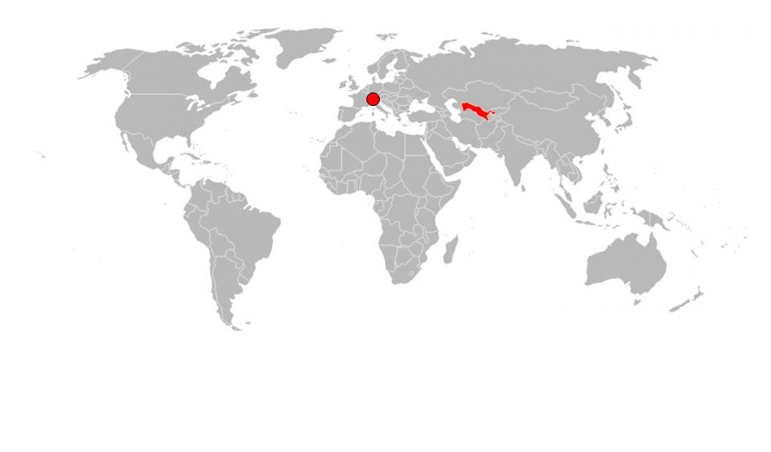

Wie viele Länder gibt es? Das kommt auf die Definition eines Landes an. Nimmt man die Mitglieder der UNO, kommt man auf 193.
Dazu kommen noch zwei Beobachterstaaten der UN, also 195 Länder. De-facto Länder wie Kosovo oder Taiwan machen eine genaue Angabe jedoch unmöglich.
Zusätzlich gibt es noch Staaten, die in einer freien Assoziation mit anderen sind, wie Niue oder die Cook-Inseln.
Liste aller Länder der Welt Zurück zur Homepage Tabellen
| Land | Hauptstadt | Kontinent | TLD |
|---|---|---|---|
| Tuvalu | Funafuti | Ozeanien | .tv |
| Suriname | Paramaribo | Südamerika | .sr |
| Brunei | Bandar Seri Begawan | Asien | .bn |
| Land | Territorien | |
|---|---|---|
| Großbritannien | Pitcairn-Island | British Indian Ocean Territory |
| Frankreich | St. Pierre und Miquelon | Mayotte |
| Spanien | Ceuta | Melilla |
| Niederlande | Aruba | Sint Maarten |
| Dänemark | Grönland | Faröer-Inseln |
| Norwegen | Svalbard | Bouvet Island |
| Land | Bolivien | Südafrika | Sri Lanka |
|---|---|---|---|
| Hauptstädte | La Paz | Bloemfontein | Colombo |
| Sucre | Pretoria | Sri Jayewardenepura Kotte |
Was haben Liechtenstein und Uzbekistan gleich?
